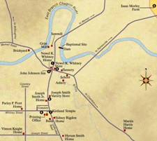
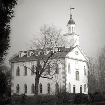

Geauga County, Ohio - 1826 |
In 1803, Ohio was granted statehood and the state was divided into townships. Kirtland Township was initially part of Trumbull County and then Geauga County. In the late 1840's, Kirtland Township became part of the newly formed Lake County. Kirtland Township was governed by three citizens, elected as trustees, and a clerk. The trustees had limited governing power. They could establish and maintain township roads, cemeteries, appoint a fire department, take care of the poor, settle property line disputes, and place levies on the ballot for money to govern.
|  Kirtland, Ohio 1830-1838 |
 Kirtland Temple |
From 1831 to 1838 Kirtland was the headquarters for the Latter Day Saint movement. Joseph Smith, Jr. moved the church to Kirtland in 1831, shortly after its formal organization in April 1830 in Palmyra, New York. The church would change its name to "Church of the Latter Day Saints" in 1834, and after leaving Kirtland, to the "Church of Jesus Christ of Latter Day Saints". The Saints built their first temple there, a historic landmark that is now owned and operated by the Community of Christ, a group descended from the church founded by Smith. The temple was built with a degree of opulence, considering the underdeveloped nature of the area and the poverty of most early church members. Many attending the Kirtland Temple dedication in 1836 claimed to see multiple heavenly visions and appearances of heavenly beings, including deity. For this and other reasons, Kirtland remains a place of importance to those of all Latter Day Saint denominations. A majority of sections from the Doctrine and Covenants, considered modern revelations and canonical by most denominations within the Latter Day Saint movement, originated in Kirtland during the 1830s.
Sally Maria's family were resident in Kirtland from 1834 until 1836 when they moved west to Missouri.